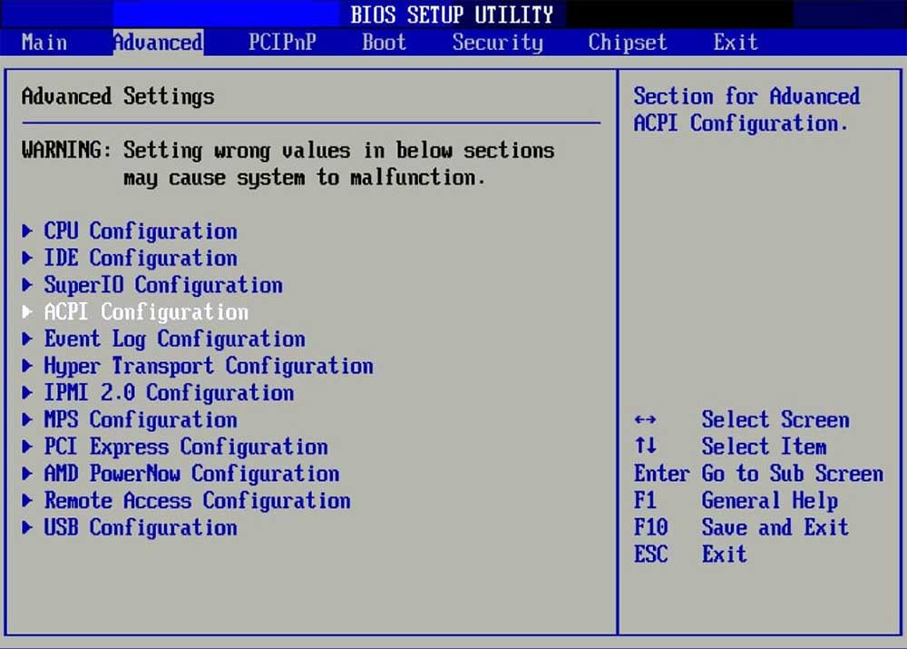
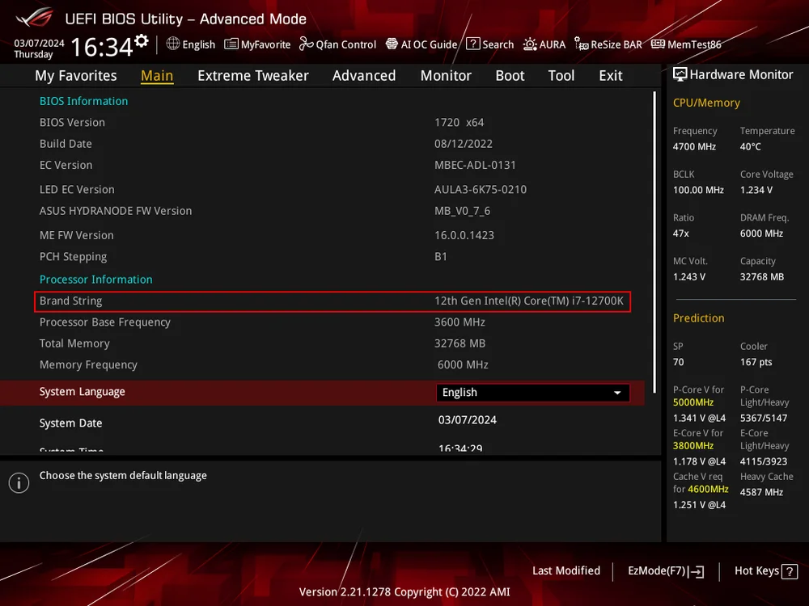
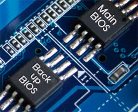
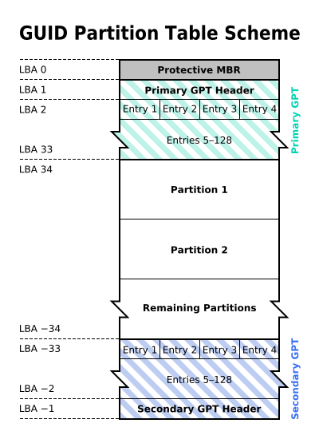
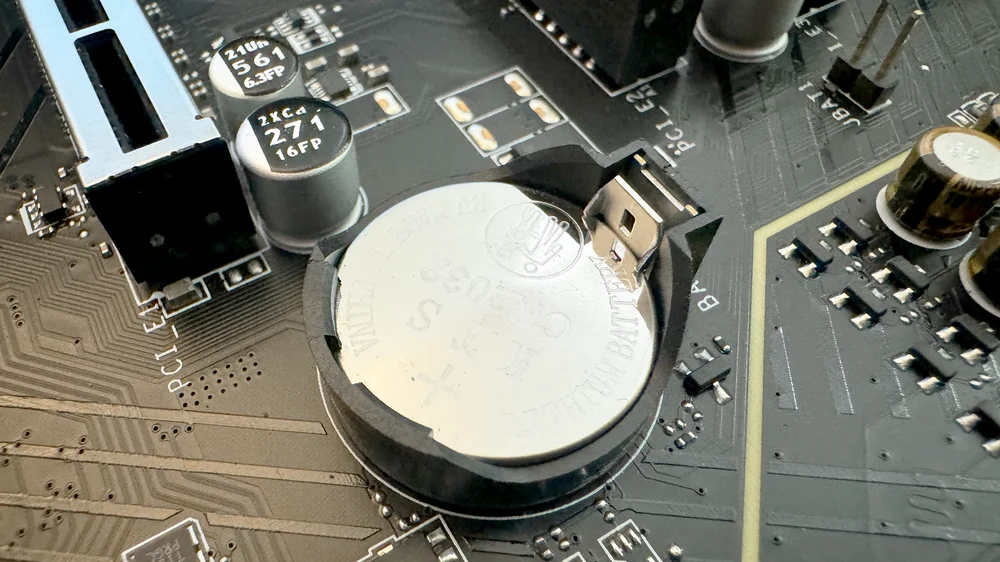

Anexo 6. BIOS, UEFI y proceso de encendido del PC¶
1. Panorama general del arranque¶
El proceso de encendido de un PC es una secuencia ordenada de pasos que comienza cuando el usuario pulsa el boton de encendido y termina cuando el sistema operativo toma el control. Esta secuencia esta dirigida por el firmware de la placa base (BIOS o UEFI), que prepara el hardware, comprueba que todo funciona y decide desde que dispositivo se iniciara el sistema.
Comprender estas fases ayuda a diagnosticar fallos, interpretar mensajes y reducir tiempos de reparacion. En mantenimiento, la clave es distinguir entre problemas de hardware (por ejemplo, RAM defectuosa) y problemas de configuracion (orden de arranque o ajustes incorrectos).
2. Secuencia de encendido paso a paso¶
- Señal de encendido (Power On)
- La fuente de alimentacion entrega energia a la placa base.
-
El chipset y la CPU reciben energia y se activan.
-
Ejecucion del firmware (BIOS/UEFI)
- Se inicializa el microcodigo del procesador.
-
Se detecta la memoria RAM, controladoras y dispositivos basicos.
-
POST (Power-On Self Test)
- El firmware realiza pruebas basicas de hardware.
-
Si detecta errores criticos, detiene el arranque y emite pitidos o mensajes.
-
Inicializacion de dispositivos
- Se preparan buses, controladoras SATA/NVMe, USB y GPU.
-
Se activa la salida de video para mostrar mensajes o interfaz UEFI.
-
Seleccion de dispositivo de arranque
- El firmware consulta el orden de arranque configurado.
-
Busca un dispositivo con un cargador valido (bootable).
-
Carga del sistema operativo
- BIOS carga el cargador desde el MBR.
- UEFI carga un archivo EFI desde la particion ESP.
- El sistema operativo toma el control del hardware.
2.1 Diagrama de flujo del arranque (con decisiones y errores)¶
%%{init: {'theme': 'base'}}%%
flowchart TD
P[⚡ Power On]:::power
F[🧠 UEFI Firmware Init]:::firmware
POST[🔍 POST Check]:::process
HWOK{¿Hardware OK?}:::decision
ERRHW[❌ Error Hardware<br>Beep Code / LED]:::error
BOOTMGR[📂 Boot Manager]:::process
DEVFOUND{¿Dispositivo Boot<br>Detectado?}:::decision
NOBOOT[❌ No Boot Device<br>BIOS Setup]:::error
SECURE{¿Secure Boot OK?}:::decision
SECERR[❌ Secure Boot Error]:::error
LOADER[📦 OS Loader]:::process
KERNEL[🐧 Kernel Init]:::process
PANIC{¿Kernel Error?}:::decision
KPANIC[💥 Kernel Panic]:::error
LOGIN[🔐 Login / Sistema Operativo]:::success
P --> F --> POST --> HWOK
HWOK -- No --> ERRHW
HWOK -- Sí --> BOOTMGR
BOOTMGR --> DEVFOUND
DEVFOUND -- No --> NOBOOT
DEVFOUND -- Sí --> SECURE
SECURE -- No --> SECERR
SECURE -- Sí --> LOADER --> KERNEL --> PANIC
PANIC -- Sí --> KPANIC
PANIC -- No --> LOGIN
classDef power fill:#ff6b6b,color:#fff,stroke:#c92a2a,stroke-width:3px;
classDef firmware fill:#4dabf7,color:#fff,stroke:#1864ab,stroke-width:3px;
classDef process fill:#74c69d,color:#fff,stroke:#2b8a3e,stroke-width:2px;
classDef decision fill:#f1c40f,color:#000,stroke:#d4ac0d,stroke-width:2px;
classDef error fill:#e74c3c,color:#fff,stroke:#922b21,stroke-width:2px;
classDef success fill:#2ecc71,color:#fff,stroke:#1e8449,stroke-width:2px;
3. El POST en detalle¶
El POST es una serie de comprobaciones automaticas que validan componentes esenciales. Su objetivo es confirmar que el hardware minimo necesario para arrancar esta disponible y funciona correctamente antes de continuar. Aunque el POST completo puede variar segun fabricante, en general sigue un orden logico de inicializacion y prueba.
- CPU y microcodigo inicial.
- Memoria RAM (presencia y conteo).
- GPU o salida de video.
- Teclado y dispositivos basicos.
- Controladoras principales (almacenamiento).
Si el POST falla, el equipo no inicia y suele mostrar pitidos o codigos de error. En mantenimiento, el POST es el primer indicador para saber si un fallo es de hardware.
3.1 Fases tipicas dentro del POST¶
-
Inicializacion del procesador
Se comprueba que la CPU responde, se carga el microcodigo y se activan funciones basicas. -
Comprobacion de RAM
Se detecta la memoria instalada y se realiza un conteo. Si hay un modulo mal colocado o defectuoso, el POST suele detenerse aqui. -
Inicializacion de video
Se activa la salida grafica para mostrar mensajes. Si falla la GPU, es habitual que aparezcan pitidos y no haya imagen. -
Deteccion de periféricos basicos
Teclado, dispositivos USB y buses principales (PCIe, SATA/NVMe) se inicializan para permitir el arranque. -
Resumen y paso al cargador
Si no hay errores criticos, se guarda el estado y se pasa a la fase de arranque del sistema operativo.
3.2 Que indica un POST correcto¶
- Se escucha el pitido corto de inicio (si esta habilitado).
- Aparece logo o texto de la placa base.
- Se muestra el conteo de memoria o la pantalla UEFI.
- El sistema continua hacia el cargador del sistema operativo.
3.3 Errores tipicos detectados por el POST¶
- RAM mal instalada o defectuosa: pitidos largos repetidos y detencion del arranque.
- GPU no detectada: pitido largo y varios cortos, pantalla en negro.
- Teclado no detectado: mensaje de error y posibilidad de continuar con F1.
- Dispositivo de arranque no encontrado: se completa el POST pero no se encuentra un disco arrancable.
3.4 Buenas practicas al diagnosticar con POST¶
- Verificar primero la RAM: extraer y volver a colocar los modulos.
- Probar con otra salida de video o con otra tarjeta grafica.
- Revisar conexiones de alimentacion principales (ATX y CPU).
- Consultar el manual de la placa para interpretar el codigo de pitidos o LEDs de diagnostico.

4. Pitidos de error y diagnostico¶
Los pitidos de la BIOS permiten identificar fallos cuando no hay video. El significado exacto depende del fabricante (AMI, Award, Phoenix), pero los patrones mas comunes son:
- 1 pitido corto: arranque correcto.
- Pitidos largos repetidos: fallo de RAM.
- 1 largo + 2 cortos: error de tarjeta grafica.
- Pitidos continuos: fallo de fuente o placa base.
En mantenimiento, siempre se debe consultar la tabla especifica del fabricante para interpretar el patron de pitidos.
4.1 Otros metodos de diagnostico de arranque¶
Ademas de los pitidos, hoy existen varias ayudas para identificar el fallo de forma mas precisa:
- LEDs de diagnostico en la placa base: algunas placas tienen indicadores para CPU, RAM, GPU o BOOT. Si queda fijo en uno, apunta al componente afectado.
- Display de codigos POST: muchas placas incluyen un display de dos digitos (hexadecimal) que muestra el codigo del POST. Ese codigo se interpreta con la tabla del fabricante.
- Tarjetas POST PCIe: se insertan en una ranura PCIe y muestran el codigo POST aunque no haya video. Son muy utiles cuando el equipo no da imagen.
- Altavoz interno (speaker): si la placa no trae altavoz, conectar uno permite escuchar los pitidos.
4.2 Uso basico de una tarjeta POST PCIe¶
- Insertar la tarjeta POST en una ranura PCIe disponible.
- Encender el equipo y observar el codigo mostrado.
- Consultar la tabla de codigos del fabricante para interpretar el fallo.
- Corregir el componente o la configuracion indicada.
Estas tarjetas son especialmente utiles cuando el fallo impide acceder a la pantalla o cuando los pitidos no son claros.

5. BIOS vs UEFI en el arranque¶
BIOS tradicional - Utiliza MBR (Master Boot Record). - Limite tipico de discos de 2 TB. - Interfaz de texto.
UEFI moderno - Utiliza GPT (GUID Partition Table). - Soporta discos grandes y arranque seguro (Secure Boot). - Interfaz grafica y soporte de raton.
En la practica, UEFI es mas flexible y seguro, pero requiere configuracion adecuada (modo UEFI o CSM) para evitar problemas de arranque con sistemas antiguos.

5.1 MBR (Master Boot Record)¶
El MBR es el esquema clasico de particionado y arranque en equipos con BIOS tradicional. El MBR ocupa el primer sector del disco y contiene dos partes clave: el codigo de arranque y la tabla de particiones. La BIOS lee ese sector y transfiere el control al cargador, que a su vez inicia el sistema operativo. Por eso el MBR es esencial en el arranque: si ese sector se corrompe, el equipo no puede iniciar aunque el resto del disco este bien.
Peculiaridades y limites principales:
- Tamano maximo: con sectores de 512 bytes, el MBR no puede gestionar discos mayores de aproximadamente 2 TB.
- Numero de particiones: admite hasta 4 particiones primarias. Para mas, se usa una particion extendida con particiones logicas dentro.
- Punto unico de fallo: la informacion de arranque y particiones esta en un solo lugar.
- Compatibilidad: es muy compatible con equipos antiguos y sistemas heredados.
Detalles tecnicos utiles:
- El MBR ocupa 512 bytes: 446 de codigo, 64 de tabla (4 entradas de 16 bytes) y una firma final 0x55AA.
- El limite de 2 TB proviene del direccionamiento de 32 bits con sectores de 512 bytes.
- La firma 0x55AA permite que el BIOS identifique un sector arrancable.
En mantenimiento, MBR aparece en equipos antiguos o cuando el disco se ha inicializado en modo BIOS. Si se pasa un disco MBR a un equipo configurado solo en UEFI, el arranque puede fallar.

5.2 GPT (GUID Partition Table)¶
GPT es el esquema moderno asociado a UEFI. Fue diseñado para superar las limitaciones del MBR y mejorar la fiabilidad. GPT usa direcciones de 64 bits, lo que permite discos muy grandes, y guarda una tabla primaria y una de respaldo al final del disco. Ademas, emplea CRC32 para detectar corrupciones en la cabecera y en la tabla de particiones.
Peculiaridades y ventajas:
- Gran capacidad: el limite practico es enorme (muy superior a 2 TB).
- Muchas particiones: permite muchas mas entradas de particion (por ejemplo, 128 en Windows).
- Redundancia: copia de seguridad de la tabla al final del disco.
- Integridad: comprobacion CRC32 para detectar errores.
- Identificadores unicos (GUID): cada particion tiene un identificador unico.
- Arranque UEFI: usa la particion ESP con archivos EFI para iniciar el sistema.
Detalles tecnicos utiles:
- En GPT hay un MBR protector en el LBA 0 para evitar que herramientas antiguas sobrescriban el disco.
- La cabecera primaria se guarda en LBA 1 y la cabecera de respaldo en el ultimo LBA.
- GPT usa CRC32 para validar cabecera y tabla de particiones.
- La ESP (EFI System Partition) almacena cargadores de arranque y utilidades del firmware.
En mantenimiento actual, GPT es el estandar recomendado cuando el equipo usa UEFI, especialmente en discos grandes o configuraciones con varias particiones. Si el equipo esta en modo BIOS heredado, GPT puede no arrancar salvo que se active compatibilidad CSM.

5.3 Comparativa rapida MBR vs GPT¶
| Aspecto | MBR | GPT |
|---|---|---|
| Tamano maximo tipico | ~2 TB | Muy superior a 2 TB |
| Numero de particiones | 4 primarias (o extendida) | Muchas (p. ej. 128) |
| Redundancia | No | Si (tabla primaria y copia) |
| Integridad | No | CRC32 en cabecera y tabla |
| Arranque | BIOS | UEFI (con ESP) |
| Compatibilidad | Muy alta con equipos antiguos | Recomendada en equipos modernos |
6. Busqueda del sistema para arranque¶
El firmware sigue el orden de arranque configurado. El proceso habitual es:
- Revisar dispositivos internos (SSD/HDD).
- Revisar unidades externas o USB.
- Revisar red (PXE), si esta habilitado.
Si no se encuentra un cargador valido, el firmware muestra un error como:
- "No bootable device"
- "Operating system not found"
En estos casos, el tecnico debe comprobar el orden de arranque, el estado del disco y la integridad del cargador.

6.1 Que ocurre cuando se encuentra un dispositivo arrancable¶
Una vez que el firmware encuentra un dispositivo con una particion arrancable, cambia el control de la ejecucion al cargador de arranque (bootloader). Ese cargador es el responsable de preparar el entorno del sistema operativo y cargarlo en memoria.
- En BIOS + MBR: la BIOS lee el sector 0 (MBR) y ejecuta el codigo que hay en ese sector. Ese codigo localiza el cargador principal en la particion activa y le pasa el control.
- En UEFI + GPT: el firmware busca la ESP (EFI System Partition), monta esa particion y ejecuta un archivo
.EFI(bootloader). El archivo EFI se encuentra mediante entradas del gestor de arranque UEFI (Boot Manager).
En ambos casos, el firmware no carga directamente el sistema operativo, sino que delega en el bootloader. Este decide que sistema iniciar, carga el kernel y transfiere el control definitivo al sistema operativo.
6.2 Rol del bootloader¶
El bootloader (por ejemplo, Windows Boot Manager o GRUB en Linux) se encarga de:
- Leer la configuracion de arranque.
- Permitir seleccionar entre varios sistemas (si existen).
- Cargar el kernel y los modulos iniciales.
- Pasar parametros de arranque al sistema operativo.
Cuando el bootloader termina su trabajo, el sistema operativo toma el control total del hardware.
6.3 Ejemplos de bootloaders¶
- Windows Boot Manager: carga el cargador de Windows desde la particion EFI y permite recuperar el sistema.
- GRUB: permite seleccionar entre varios sistemas y es muy comun en Linux.


6.4 Diagrama simple del arranque¶
Boton de encendido
│
▼
BIOS/UEFI inicia hardware
│
▼
POST (autocomprobacion)
│
▼
Seleccion de dispositivo de arranque
│
▼
Bootloader (GRUB / Windows Boot Manager)
│
▼
Kernel del sistema operativo
│
▼
Sistema operativo en ejecucion
7. Errores frecuentes en el arranque¶
- Pantalla negra sin pitidos: posible fallo de fuente o placa.
- Pitidos de RAM: memoria mal colocada o defectuosa.
- Reinicio en bucle: configuracion incorrecta o sobrecalentamiento.
- Error de disco: cable SATA flojo o SSD no detectado.
Una buena practica es revisar primero lo basico: alimentacion, memoria y conexiones.

8. Recomendaciones de mantenimiento¶
- Mantener actualizado el BIOS/UEFI cuando el fabricante lo recomiende.
- Verificar la bateria CMOS si se pierden ajustes.
- Revisar el orden de arranque antes de reinstalar sistemas.
- Documentar cambios de firmware y configuraciones.
Resumen (ideas clave)¶
- El arranque es una secuencia guiada por BIOS/UEFI.
- El POST detecta fallos basicos y emite pitidos.
- BIOS usa MBR; UEFI usa GPT y Secure Boot.
- Los errores de arranque se diagnostican por sintomas y mensajes.
Referencias y enlaces¶
- https://www.pccomponentes.com/bios-uefi-que-es
- https://www.corsair.com/es/es/explorer/diy-builder/memory/what-are-cmos-bios-and-uefi/
- https://www.profesionalreview.com/guias/bios/
- https://www.ntfs.com/mbr-damaged.htm
- https://www.ibm.com/support/pages/operating-systems-using-mbr-have-2-terabyte-2-tb-disk-limitation-ibm-bladecenter-and-system-x
- https://uefi.org/specs/UEFI/2.9_A/05_GUID_Partition_Table_Format.html
- https://en.wikipedia.org/wiki/Master_boot_record
- https://en.wikipedia.org/wiki/GUID_Partition_Table
- https://en.wikipedia.org/wiki/EFI_system_partition
- https://commons.wikimedia.org/wiki/File:GNU_GRUB_on_MBR_partitioned_hard_disk_drives.svg
- https://commons.wikimedia.org/wiki/File:GUID_Partition_Table_Scheme.svg
- https://commons.wikimedia.org/wiki/File:Windows_Boot_Manager.png
- https://commons.wikimedia.org/wiki/File:GRUB_2%27s_boot_menu.png
Fecha de actualización: 17/02/2026